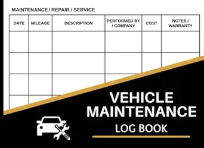
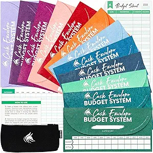
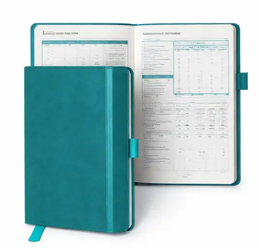
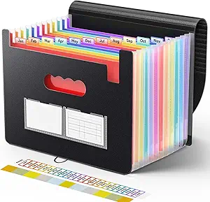

Budget Categories List: 6 Essential Groups for a Perfect Budget

📘 In This Guide 👇
- Introduction to Budget Categories List
- Why Budget Categories Are the Backbone of Financial Success
- The 6 Core Budget Category Groups (A Complete Financial Framework)
- Fixed Essential Expenses (The Foundation)
- Variable Living Expenses (The Control Zone)
- Transportation & Logistics (The Mobility Engine)
- Financial Goals & Protection (The Wealth Builder)
- Lifestyle & Personal Spending (The Balance Layer)
- Irregular Expenses (Sinking Funds – The Hidden Key)
- Bonus Categories to Strengthen Your Budget
- A Simple, Structured Budget You Can Follow
- The 50/30/20 Rule (A Practical Guide to Balanced Budgeting)
- How to Customize Your Budget Categories
- Common Budgeting Mistakes to Avoid
- The Golden Rule of Budgeting Success
- Frequently Asked Questions
- Final Thoughts: Your Budget Is a Living System
Introduction to Budget Categories List
Creating a budget is often seen as a restrictive exercise, but in reality, it is a powerful system for designing your financial life with intention. Think of your budget not as a list of limitations, but as a blueprint for control, clarity, and long-term stability.
Many people struggle with budgeting because their budget lacks structure. Without clearly defined categories, money flows without direction and that’s how financial stress begins. This guide brings together the most effective principles of budgeting into one comprehensive, evergreen framework. By the end, you will understand exactly what to include in your budget categories and how to build a plan that truly works.Read our complete monthly budgeting guide.
This guide is based on proven budgeting systems used by financial counselors, nonprofit credit agencies, and long-term savers around the world.
At SmartMoneyTrek, we focus on practical personal finance systems designed for real people, especially those building stability from limited income.
Why Budget Categories Are the Backbone of Financial Success
A budget without clearly defined categories is like navigating with a blank map, you may be moving, but you lack direction, clarity, and control.
Strategically structured budget categories transform your finances by giving every unit of money a clear purpose. They empower you to:
- Track your spending with precision — see exactly where your money is going, down to the smallest detail
- Control overspending — set boundaries that keep each expense area in check
- Expose hidden financial leaks — uncover habits that silently drain your income
- Prioritize what truly matters — ensure your needs are secured before indulging in wants
- Build wealth intentionally — create consistent systems for saving and investing
Ultimately, budget categories elevate your financial plan from vague assumptions to a deliberate, results-driven strategy. They don’t just organize your money they give it direction, discipline, and purpose.
Saving money works best when you are tracking every dollar with a zero-based budget.
The 6 Core Budget Category Groups (A Complete Financial Framework)

To build a budget that is both resilient and adaptable, your finances must be organized into clearly defined, strategic groups. These six core budget categories provide a comprehensive structure that ensures stability, control, and long-term growth:
- Fixed Essential Expenses (The Foundation) — Non-negotiable costs that sustain your basic standard of living and must be covered consistently
- Variable Living Expenses (The Control Zone) — Flexible, day-to-day spending areas where disciplined decisions create immediate impact
- Transportation & Logistics (The Mobility Engine) — The systems that keep your life and income moving efficiently
- Financial Goals & Protection (The Wealth Builder) — Savings, investments, and safeguards that secure your future and build lasting wealth
- Lifestyle & Personal Spending (The Balance Layer) — Discretionary expenses that enhance enjoyment while maintaining financial discipline
- Irregular Expenses (Sinking Funds – The Hidden Key) — Planned allocations for non-monthly costs that prevent financial surprises
Together, these six groups form a complete financial ecosystem, one that not only organizes your money but also aligns your spending with your priorities, protects you from uncertainty, and positions you for sustainable financial success.
Now, let’s explore each category in depth.
If your fixed expenses feel too high, learn how to reduce monthly expenses without sacrificing essentials.
If you don’t yet have a simple tracking system, follow our complete beginner budgeting guide to see where your money is leaking and how to plug those holes.
Fixed Essential Expenses (The Foundation)
These are your non-negotiable financial commitments, the core expenses that sustain your daily life and must be met consistently, regardless of circumstances.
What to include:
- Rent or mortgage payments
- Utilities (electricity, water, gas)
- Internet and mobile services
- Insurance (health, auto, life)
- School fees or tuition
- Essential transportation obligations
Why this matters:
Fixed essential expenses form the structural base of your financial life. Failing to meet them can trigger immediate and serious consequences such as eviction, penalties, damaged credit, or loss of critical services. In many ways, they represent the minimum cost of maintaining stability.
Smart Insight:
A healthy financial structure typically allocates 50–60% of income to fixed essentials. When this threshold is exceeded, it creates pressure on the rest of your budget, limiting your ability to save, invest, or adapt. This is often a signal to either reduce fixed costs or strategically increase income to restore balance and financial flexibility.
If your income is currently limited, consider increasing it with realistic side income ideas for beginners.
Variable Living Expenses (The Control Zone)
These are essential, day-to-day expenses that naturally fluctuate from month to month, making them the most flexible and controllable part of your budget.
What to include:
- Groceries (home food consumption)
- Household supplies
- Personal care (toiletries, grooming, haircuts)
- Minor medical expenses
- Variable utility costs
Why this matters:
This category is where most budgeting breakdowns occur. Because these expenses are not fixed, they are often underestimated, loosely tracked, or overlooked entirely. Small, frequent spending decisions in this zone can quietly accumulate into significant financial strain if left unmanaged.
Strategic Insight:
Maintain clear boundaries within this category, especially by separating groceries from dining out. Groceries are a necessity; dining out is a discretionary lifestyle choice. Combining them masks overspending patterns and weakens your ability to make precise financial adjustments.
If you struggle to track daily spending, this tool can help:

📊 Budget Planner Notebook
Track expenses, reduce overspending, and stay consistent monthly.
See Best Budget PlannerMastering this category gives you immediate control over your cash flow and creates the flexibility needed to strengthen savings and achieve your financial goals.
If you’re starting from zero, read our step-by-step emergency fund guide to build financial security faster.
Transportation & Logistics (The Mobility Engine)
Your capacity to earn, meet obligations, and seize opportunities is directly tied to your ability to move. This category ensures that your mobility remains reliable, efficient, and financially sustainable.
What to include:
- Fuel or daily transport fares
- Public transportation costs
- Car payments
- Vehicle insurance
- Maintenance (servicing, oil changes, repairs, tires)
- Parking fees and tolls
Why this matters:
Transportation is often underestimated until it becomes a problem. When overlooked, it can trigger sudden and significant financial strain, especially in the form of unexpected repairs or rising fuel costs. A disruption in mobility doesn’t just affect convenience; it can directly impact your income and productivity.
Pro Tip:
To avoid unexpected transport costs, this can help:

🚗 Car Maintenance Log Book
Track repairs, fuel, and maintenance to avoid surprise expenses.
See Maintenance ToolEstablish a dedicated monthly maintenance fund. Consistent, small contributions create a financial buffer that absorbs repair costs without destabilizing your budget. This proactive approach transforms unpredictable expenses into planned, manageable ones, protecting both your finances and your mobility.
For those who prefer more precision and control, zero-based budgeting assigns every dollar a specific purpose.
High monthly bills often lead to debt. If that’s your situation, visit our how to reduce debt and stop high interest payments eating your income.
Financial Goals & Protection (The Wealth Builder)
This is the category that elevates your budget from basic expense tracking to a deliberate system for wealth creation and financial security. It is where discipline meets long-term vision.
What to include:
Savings & Investments
- Emergency fund (covering 3–6 months of essential expenses)
- Retirement savings
- Investments (stocks, businesses, mutual funds)
- Short-term savings (travel, gadgets, planned purchases)
Debt Repayment
- Credit card balances
- Personal loans
- Student loans
- Car loans
Why this matters:
Without a structured plan, savings become inconsistent and easily neglected. At the same time, unmanaged debt compounds quietly, eroding your financial progress and limiting future opportunities. This category ensures you are not just managing money, but actively building financial strength and resilience.
Powerful Principle:
Pay Yourself First
If you want a practical system to apply this, here are the best options:
💰 Best Budgeting Systems (Compared)

Perfect for full control and disciplined saving. Ideal if you want to seriously manage your money.
- ✔ Best for saving discipline
- ✔ Helps you “pay yourself first”
- ✔ Visual money control system

Great for beginners who want a simple way to track income and expenses.
- ✔ Easy to use
- ✔ Low cost
- ✔ Perfect for beginners
Prioritize saving and investing immediately when income is received not after expenses. This simple shift guarantees consistent wealth accumulation and prevents lifestyle spending from consuming your future.
Bonus Strategies:
- Snowball Method — Focus on clearing smaller debts first to build momentum and psychological wins
- Avalanche Method — Target high-interest debts first to minimize total repayment cost and accelerate financial freedom
Mastering this category positions you to move beyond survival into stability, growth, and lasting financial independence.
If your income is tight, learn realistic ways to increase your income so you can improve your savings rate.Lifestyle & Personal Spending (The Balance Layer)
A well-designed budget should enhance your life not restrict it. This category ensures your financial plan remains realistic, enjoyable, and sustainable over the long term.
What to include:
- Dining out
- Entertainment (movies, streaming services)
- Hobbies and recreation
- Shopping (clothing, gadgets)
- Gifts and celebrations
- Vacations and leisure travel
Why this matters:
A budget that eliminates enjoyment often leads to frustration, burnout, and eventual failure. Financial discipline is not about deprivation, it is about intentional living. When this category is properly structured, it allows you to enjoy the present while still protecting your future.
Smart Approach:
Focus on setting clear limits rather than imposing rigid restrictions. Give yourself permission to spend within defined boundaries. This creates a healthy balance between discipline and enjoyment making your budget not only effective, but sustainable for life. how to save money consistentlyIrregular Expenses (Sinking Funds – The Hidden Key)

This is the category where many budgets quietly break down not because expenses are truly unexpected, but rather because they were never deliberately planned for.
Sinking funds provide a powerful solution by converting large, occasional costs into small, consistent monthly contributions. Instead of reacting to financial surprises, you prepare for them in advance.
What to include:
- Car maintenance and repairs
- Annual subscriptions or renewals
- School supplies and fees
- Holiday and festive spending
- Travel and vacations
- Home maintenance
- Clothing replacement
Why this matters:
When irregular expenses are ignored, they appear as “emergencies” that disrupt your entire financial plan. This leads to debt, stress, or dipping into savings meant for other goals. Properly structured sinking funds eliminate this cycle by ensuring every predictable expense has already been accounted for.
Simple Formula:
Break any annual or occasional expense into manageable monthly amounts. If an expense costs $12,000 per year → set aside $1,000 monthly.
This approach transforms financial uncertainty into control, allowing your budget to remain stable, predictable, and resilient no matter what expenses arise.
To stay prepared for future expenses, this tool can help:

📂 Budget Binder Organizer
Organize sinking funds and plan for future expenses easily.
See Budget BinderBonus Categories to Strengthen Your Budget
To build a truly complete and future-ready budget, it’s essential to account for areas that reflect both your values and your income growth strategy. These additional categories ensure your finances remain balanced, purposeful, and sustainable.
Giving & Support
- Family support and obligations
- Religious contributions
- Charity and donations
Business or Side Hustle Expenses
(Especially important if you operate projects like an online platform or digital business)
- Website hosting
- Domain renewals
- Marketing tools and software
- Advertising and promotions
Why this matters:
A strong financial system does more than cover expenses, it aligns with your principles and supports your capacity to grow. By planning for giving, you ensure generosity is intentional rather than reactive. By budgeting for business expenses, you protect and expand your income streams without disrupting your personal finances.
Including these categories transforms your budget into a holistic system, one that not only sustains your lifestyle but also empowers your impact and long-term financial growth.
Learn More on SmartMoneyTrek
Explore our core financial guides:
- Save Money – proven ways to cut bills and build savings
- Budgeting – Tools and strategies to control your money
- Make Money – real side hustles and income ideas
- Loans & Debt – How to borrow wisely and eliminate debt
A Simple, Structured Budget You Can Follow
Clarity is the foundation of financial control. A well-organized budget doesn’t just track money, it creates a clear system that directs every dollar with purpose and precision. Here’s a streamlined structure table you can adopt to manage your finances effectively:
| Category | Subcategory | Examples |
|---|---|---|
| Income | Primary & Secondary Income | Salary, Side hustle, Additional income |
| Fixed Essentials | Basic Living Costs | Rent, Utilities, Internet, Communication |
| Variable Living | Flexible Daily Expenses | Groceries, Personal care |
| Transportation | Mobility Costs | Fuel, Public transport |
| Financial Goals | Savings & Growth | Savings, Investments |
| Debt Obligations | Repayments | Loan repayments |
| Lifestyle & Personal | Discretionary Spending | Entertainment, Shopping |
| Irregular Expenses (Sinking Funds) | Planned Non-Monthly Costs | Annual expenses, Maintenance and upkeep |
Why this structure works:
This framework creates a clear financial flow from income to obligations, priorities, and lifestyle. It ensures that essential needs are secured first, future goals are consistently funded, and discretionary spending remains controlled.
When your budget is this organized, every decision becomes intentional. You move from simply managing money to directing it with clarity, confidence, and long-term purpose.
The 50/30/20 Rule (A Practical Guide to Balanced Budgeting)
If you’re looking for a simple, effective starting point, the 50/30/20 rule offers a clear framework for structuring your finances with balance and intention:
- 50% — Needs: Fixed expenses and essential variable costs required for daily living
- 30% — Wants: Lifestyle and discretionary spending that enhances your quality of life
- 20% — Savings & Debt Repayment: Building wealth, securing your future, and eliminating financial liabilities
Why this matters:
This model provides a practical balance between responsibility and enjoyment. It ensures your essentials are covered, your future is consistently funded, and your present life remains fulfilling, all within a structured system.
Clarity with Flexibility:
The 50/30/20 rule is not a rigid formula but a guiding principle. Your actual percentages may shift based on income level, cost of living, or financial goals. What matters most is the discipline of allocating your money intentionally across these three core priorities.
Refine Your Strategy:
For a more detailed and structured approach, explore our complete budgeting system in SmartMoneyTrek’s Budget Framework Guide, where you’ll learn how to break these percentages down into precise categories that align with your real-life financial needs and long-term goals.
How to Customize Your Budget Categories
No budget should be adopted blindly. A truly effective budget is not copied, it is carefully designed to reflect your lifestyle, responsibilities, and long-term priorities.
Your categories should mirror how you actually live and spend, not how you think you should.
Ask yourself:
- What do I consistently spend money on?
- Which expenses are essential, and which are optional?
- Where do I tend to overspend or lose control?
- What financial goals am I working toward?
Why this matters:
A generic budget creates friction because it ignores your reality. But a customized budget aligns with your habits, responsibilities, and ambitions, making it easier to follow, adjust, and sustain over time.
Real-Life Perspective:
- A student may prioritize tuition, study materials, and food
- A family may focus on housing, childcare, and household stability
- An entrepreneur may allocate funds toward business operations and growth
Key Insight:
Your budget is a personal financial blueprint. When it reflects your real life, it becomes a tool of clarity and control not restriction.
The goal is not to fit into someone else’s system, but to build one that works seamlessly for you, supporting your present needs while guiding you toward your future goals.
Common Budgeting Mistakes to Avoid
Even with the right structure, small missteps can quietly undermine your budget. Avoid these common pitfalls to maintain control and consistency:
1. Overcomplicating Your Budget
Too many categories create confusion and reduce consistency.
Solution: Start simple, refine and expand as needed.
2. Ignoring Small Expenses
Frequent, minor purchases accumulate into significant costs.
Solution: Track every expense with discipline.
3. Failing to Plan for Irregular Costs
Unplanned expenses disrupt even well-structured budgets.
Solution: Use sinking funds to prepare in advance.
4. Setting Unrealistic Limits
Overly restrictive budgets lead to frustration and burnout.
Solution: Build flexibility, be realistic about your habits.
5. Neglecting Regular Reviews
A budget that isn’t updated quickly becomes ineffective.
Solution: Review and adjust your budget monthly.
Key Insight:
A successful budget isn’t just well-designed, it’s consistently maintained, realistically structured, and continuously improved.
budgeting strategies for beginnersThe Golden Rule of Budgeting Success
A truly effective budget is built on clarity, preparation, and foresight. Anchor your system on these three principles:
1. Separate Needs from Wants
Clear distinctions eliminate confusion and expose hidden overspending.
2. Always Include a Buffer
Allocate 3–5% of your income to a “Miscellaneous” category to absorb unexpected costs without disruption.
3. Think Monthly for Annual Expenses
Break future obligations into monthly allocations to stay prepared and in control.
Key Insight:
Financial stability is not achieved by reacting, it is built through intentional planning, disciplined structure, and proactive thinking.
Frequently Asked Questions
Budget categories are organized groups used to track your income and expenses. They help you clearly understand where your money is going and ensure every naira is assigned a specific purpose.
Your budget should include fixed expenses, variable expenses, transportation costs, savings and investments, debt repayment, lifestyle spending, and irregular expenses like sinking funds.
Most people need between five and eight main categories. The goal is to keep your budget simple enough to manage while still covering all essential expenses.
Fixed expenses remain the same each month, such as rent or insurance, while variable expenses change over time, like groceries, transport, and utility bills.
Sinking funds are savings set aside for future or irregular expenses like car repairs, holidays, or annual subscriptions. They help you avoid financial surprises.
Yes, savings should always be a priority category. Treat it like a fixed expense by setting aside money immediately after receiving your income.
The 50/30/20 rule divides your income into 50% for needs, 30% for wants, and 20% for savings and debt repayment. It is a simple and effective budgeting framework.
Most budgets fail because they lack clear categories, ignore irregular expenses, or set unrealistic limits that are difficult to maintain consistently.
You should review your budget at least once every month to adjust for changes in income, expenses, and financial priorities.
Yes, your budget should reflect your lifestyle. You can adjust categories to include business expenses, family support, or any personal financial goals.
Final Thoughts: Your Budget Is a Living System
A well-structured budget is not a tool of restriction, it is a framework for intentional, purpose-driven living. When your budget categories are clearly defined:
- You eliminate uncertainty and gain full visibility over your money
- You make decisions with confidence, not guesswork
- You build a system that actively aligns your spending with your goals
True financial strength comes from order and foresight. Secure your essentials first, consistently invest in your future, prepare for the unexpected, and then enjoy your lifestyle without guilt or instability.
Remember:
A powerful budget does not control your life, it gives you the clarity, discipline, and freedom to control it.
Ready to Apply This Budgeting Method?
Learn how to create a simple monthly budget step by step and start organizing your income today. Create Your Monthly Budget
Your financial journey doesn’t need to begin with perfection. It simply needs to begin with consistency, because consistent action, over time, is what turns small steps into lasting progress.
This content is for educational purposes only and does not constitute financial advice.
Last updated: March, 2026 • Reviewed for accuracy and relevance.